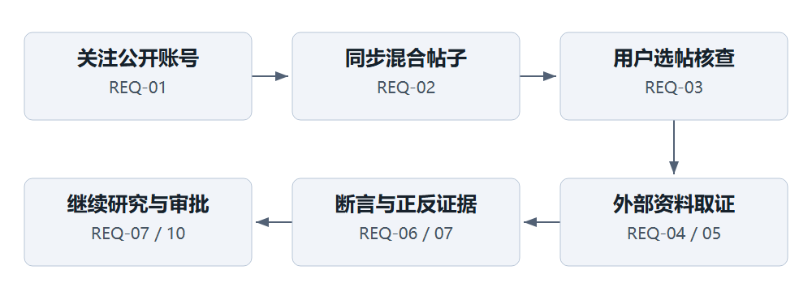
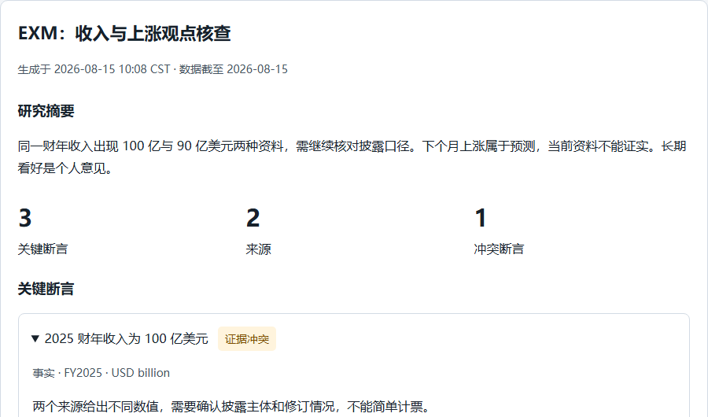
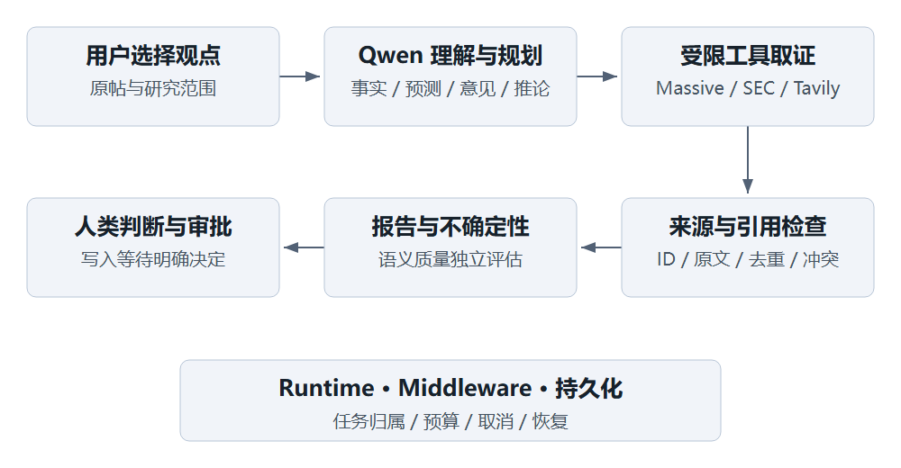

00 / 产品案例
案例资料说明
产品：X 投资观点研究助手。署名：李林翼。项目时间：2026.08—至今。交付版本：产品案例 1.0，2026.10.09。
本案例以“选择一条公开投资观点，形成可追溯的研究判断”为主线。正文给出完整目标产品方案；技术交付附录统一列明方案与现有实现的对应关系。
原型中 EXM、账号、帖子、财务值和审批均使用合成资料，状态仅保存在浏览器内存；没有真实交易、外部请求或个人资料写入。页面图中的“样式对照”使用同一内容和留存样式重建，以控制内容差异；真实应用截图单独登记。官方来源、图像属性和运行记录统一见技术交付附录与证据目录。简历只采用实际完成的能力与验证结果。
01 / 产品案例
项目概述与产品定位
问题与机会
用户在 X 上看到“MU 下个月会爆发”“存储周期仍将大涨”等观点时，真正费力的是逐步确认：帖子说了哪些可核查的事，价格属于哪个交易日，披露和新闻是否支持它，还有哪些反例。跨标签页搜索容易丢失原始观点、时期与出处之间的对应关系。
本人的典型任务是先关注公开账号，在投资、生活与其他内容混合的帖子流中选择具体观点，点击核查，再阅读报告。账号追踪解决持续发现问题；单帖研究解决一条观点的验证问题。两者不能用“所有帖子自动研究”替代。
产品定位
面向阅读公开 X 美股观点、愿意核对证据的个人研究者，提供从原始观点到断言、外部证据、冲突与下一步问题的研究工作台。核心价值是减少资料组织断点，让判断能够被追问和复核。产品输出研究依据与条件，不输出保证收益或自动交易指令。
核心任务表述：当我看到值得核查的投资观点时，帮我把其中的事实、预测、意见与推论分开，并定位支持和反对证据，让我知道哪些判断成立于什么条件、还应继续查什么。
成功定义
产品边界与个人贡献
V1 聚焦公开账号、文本观点、受限外部取证、异步研究、证据阅读和人工审批。图片理解、跨账号观点周报和外部推送属于 V2 扩展；多博主一致只表达观点分布，不能作为事实支持数量。
李林翼负责问题定义、核心页面需求、流程判断、验收反馈与产品材料；使用 AI Coding 工具协作完成应用实现与联调。股票行情页面由 AI 提议后纳入方案。项目以本地单用户 MVP 为交付形态，目标验证者与主要使用者是本人。
故事与材料索引
需求 REQ-01—12 对应 P01—P07 页面、AC-01—12 验收组和评估用例。行业研究解释机会；用户研究解释任务；PRD 定义行为；原型展示交互；评估约束 AI；可读性案例展示迭代；技术附录提供实现与证据入口。
02 / 产品案例
行业背景与竞品分析
研究问题与资料范围
研究问题是：投资内容发现、资料搜索与观点核查分别由哪些产品解决？用户完成一条观点核查时，在哪些环节仍需自行拼接？比较维度围绕任务而非功能数量，包括入口、资料组织、引用定位、观点与事实的区分，以及持续追问。
FINRA Foundation 2026 年研究简报使用 NFCS 投资者调查，显示 2024 年受访投资者中约 29% 较多使用社交媒体或讨论板获取投资信息，26% 至少有时参考金融影响者。它说明社交投资信息具有研究意义，不证明本产品的市场规模，也不能外推为中国 X 用户需求或因果关系。FINRA 官方简报
任务型竞品比较
竞品功能依据 AlphaSense 的官方交互说明与 Stocktwits 的官方产品介绍，比较聚焦可核对的产品任务与组织方式。
方案选择与放弃项
保留账号追踪，减少每次寻找研究对象的重复操作；保留人工选帖，让用户控制相关性与调用成本；保留断言级证据，避免只有整篇摘要却无法复核；保留行情辅助页，明确其交易日与价格口径。
不将全量自动研究、情绪预测或交易执行纳入首版：它们扩大成本和责任范围，不能直接提高单帖核查的可解释性。V1 采用受限工具集，不增加 RAG、向量库、文档上传解析和多 Agent 架构，因为主任务依赖可更新的外部资料与单次研究上下文。
结论与检验方式
差异化假设是“以一条观点为单位组织证据”能够降低研究过程中的信息断裂。验证应让使用者完成同一任务，检查能否正确回到来源、区分预测与事实、识别冲突；不能通过竞品功能表宣称效率优于专业平台。
03 / 产品案例
用户与场景研究
研究设计
研究目标：识别“看到观点—决定核查—阅读证据—形成下一步问题”中的决策点。当前真实用户证据包括本人 MU 场景、单帖核查体验及对浅色小字和冗余说明的反馈。SIM-R 用完整访谈与任务记录展示研究方法，资料属性遵循案例资料说明。
招募条件：过去一个月阅读过公开美股观点，能描述最近一次查证过程；排除仅寻求自动买卖指令的任务。每次 30 分钟：5 分钟背景、10 分钟最近任务、10 分钟原型操作、5 分钟回顾。记录屏幕操作需事先获得同意；不收集账户、持仓金额和身份凭证。
中性提纲：最近一次看到怎样的观点？随后做了什么？哪些信息让你改变看法？怎样确认数字的时期？找不到资料时如何结束？请从帖子开始操作并说出当前疑惑。避免问“你是否喜欢我们的 AI 核查”。研究方法参考 GOV.UK 用户需求与深度访谈指南。
行为画像与场景
两类画像是任务模型，不附会真实人口比例。V1 主画像为 A，B 的汇总需求由站内简报承接；跨账号周报进入 V2。
SIM-R 完整访谈摘要
每条记录的提问、回答、观察和解释分别保存在研究记录 CSV。解释不冒充用户原话。四条记录用于推导覆盖，不据此计算用户占比或购买意愿。
洞察到需求
用户旅程
真实自测只证明本人能够完成既定主流程。面向外部用户时采用同题任务观察，单独检验理解错误、来源定位与审批判断，不把个人满意转成市场验证结论。
04 / 产品案例
需求分析与版本规划
优先级原则
用“任务必要性、错误后果、使用频率、实现依赖”判断优先级。P0 是闭合核心任务或避免严重误导的必要条件；P1 提升持续使用；P2 扩展任务边界。不用缺乏真实样本的 RICE 分数制造精确感。
方案取舍
手动选帖优先于全量自动核查，避免无关内容消耗预算。证据关系优先于更多来源数量，因为多个转载不能变成多份独立事实。报告详情采用渐进披露，摘要先行，第一条断言默认展开，来源和运行活动按需查看。行情保留为研究背景，清楚标注上一交易日收盘，避免“当前价”误导。
版本与进入条件
迭代节奏按交付门槛推进：先闭合核心任务与阻断错误，再验证任务连贯性，最后按任务收益开放扩展。
需求变更规则
新增需求必须说明触发场景、现有替代方式、影响页面、数据与预算、验收案例。改变来源口径、审批动作或时间单位时，同步修改 PRD、原型、评价规则与追溯表。P0 缺陷优先于 P2 扩展；功能覆盖不能抵消关键误导。
05 / 产品案例
产品需求规格 PRD
目标、范围与术语
目标是把一条公开投资观点转换为可复核的研究报告，并支持用户继续研究。需求基线为 REQ-01—12；主用户为证据核对型个人研究者；部署边界为个人研究空间。报告不承担收益承诺或交易执行。
Post 是来源帖子；Claim 是一条可单独评价的断言；Source 是本次研究保存的资料片段；Evidence 是断言与来源的关系；Run 是一次异步任务；Approval 是对 Agent 写动作的一次决定；“数据截至”指报告采用资料的截至日，不等于所有来源同一时刻。
通用字段与数据规则
REQ-01 公开账号追踪
入口为 P02“添加账号”。提交后先校验，再读取公开账号信息；成功保存账号并显示“同步帖子”操作。保存与同步是两步，页面不承诺添加即已有帖子。添加中禁用重复提交；重复账号定位已有卡片；超时保留输入并允许重试。
账号卡片显示名称、@username、最近同步时间与状态。移除追踪需二次确认，确认文案说明停止后续同步；不将其描述为删除 X 原账号。样本来源表现只能按已核查帖子统计，并显示样本量；手动信任标签不改变证据判断。
AC-01：合法账号可添加、重复不新建、非法输入不发请求、公开性与鉴权错误可区分；保存成功但未同步时明确为空。
REQ-02 有界同步与混合帖子
手动同步每次最多 3 页，每页 20 条；帖子流 30 条一页。同步显示执行中、完成、部分完成与失败，保留已取得内容。增量使用持久水位与分页 token；任何部分失败不推进完成水位，重试通过 post_id 去重。账号数据和水位均持久化。
帖子流保留生活、观点和其他内容，不自动认定每条都是投资。卡片呈现账号、发布时间、文本、cashtag 和研究状态；原帖链接可打开。文本中的图片链接只作为原帖内容，不推断图中数值。搜索、账号和断言状态筛选采用交集；断言状态筛选命中任一断言即可，不能暗示整帖已证实。
对撤回或不可用帖子隐藏正文及依赖内容，保留必要任务状态与撤回提示；后台每 6 小时复核，超过 24 小时未完成可用性检查的帖子不得发起新研究。停机后恢复先处理过期状态，不能把未复核称为实时可用。
AC-02：混合帖子可见；部分失败有已保存数与重试入口；失败不跳水位；重复页不重复入库；撤回后不能继续展示原文或依赖引用。
REQ-03 单帖核查与重复提交
用户在具体卡片点击“核查”，请求带 post_id、原帖上下文、可选 ticker 和 request_key；用户可在进入研究页后补充研究重点。核查不要求帖子通过自动投资分类。发起后卡片显示“查看研究”，按钮进入同一 Run。
同一 post_id 存在活跃 Run 时默认返回该任务；已完成任务默认打开最新报告。用户明确“重新研究”时建立新 Run，记录父任务与新 key。失败的同次网络重试复用 key；改变问题需新 key。应用不以按钮临时禁用替代服务端去重。
AC-03：双击、网络重试和刷新均不创建第二个活跃任务；同键不同内容 409；不可用或过期帖子拒绝发起并提示重新同步。
REQ-04 原子断言与类型
每次优先提取不超过 6 条关键断言，结构允许最多 12 条；每条文本 ≤2000 字符，解释 ≤2000，ticker ≤8。复合句拆成可独立核对的主张，保留条件、主体与时期，不补充原帖未说的断言。超出范围说明覆盖选择，并提供继续研究入口。
类型为 fact 事实、prediction 预测、opinion 意见、inference 推论。预测和意见状态固定为“不可作为事实核实”，但可以列出相关背景；推论不得显示为充分事实支持。未来价格方向不因已有利好就得到确定结论。
状态为 supported、partially_supported、contradicted、conflicting、insufficient_evidence、not_verifiable。状态是研究判断，不是校准概率。非 X 支持与反对证据同时存在时显示冲突；没有可核对外部证据时显示不足。
AC-04：复合观点被拆分；预测、意见、推论分别处理；无证据不显示支持；多账号同意不计为外部事实支持。
REQ-05 外部取证与口径
Massive 提供行情与价格背景；SEC 提供公司披露及受支持的结构化财务；Tavily 提供 Web 搜索和内容抽取；Qwen 理解、规划受限工具调用与组织报告。X 提供核查对象和舆论线索，不为自身主张自证。
行情默认采用上一交易日复权 OHLC。页面字段写“上一交易日收盘”，显示 session_date、USD、as_of 与“非实时”。开盘至收盘变化 = (close/open − 1) ×100%，明确标为“较当日开盘”，不写“较上一日涨跌”。节假日沿用实际返回的交易日，不伪造今日价格。日线查询仅接受适配器允许的 730 天窗口，不代表套餐保证。
取证按断言路由：财务事实先查披露，价格事实查行情，新闻事实查可定位网页；资料不可得时说明查询范围和失败，不编造替代数值。引文对应原始片段，转载来源按来源链识别；域名数和内容 hash 数只做描述计数。
AC-05：金额、币种、财年、同比基期与行情交易日均可辨识；缺值、不同口径和无法取得资料不输出确定性数值比较。
REQ-06 证据关系与来源
每条断言最多 8 条证据；quote 1—1800 字符，rationale ≤1500。方向为 support、contradict、context。每项显示来源、引文、为何相关、适用时期和限制。点击证据先定位本地保存片段，再可打开原始 URL；原始网页失效时仍保留合法保存片段及失效提示，撤回内容按清理规则处理。
程序核对 source_id 属于本次研究、空白规范化后的引文可在 excerpt 中找到，并按 source_id 与方向去重；无效项移除并显示警告。语义支持必须另外判断主体、口径、时期、条件与否定关系，不能用字符串匹配替代。支持和反对证据同层展示，不把反例藏入活动日志。
AC-06：伪造 ID 和引文不能入有效证据；X 自证无效；冲突可见；来源缺失不产生“全部核实”的摘要。
REQ-07 报告阅读与继续研究
P03 顺序为标题与时间、摘要与整体判断、断言覆盖、逐条断言与证据、正反因素、不确定性、追问、来源、运行活动。标题 ≤180，summary ≤5000，assessment ≤3000；正反因素各 ≤6，uncertainties ≤12，追问 ≤6。第一条断言默认展开，其余可展开；活动默认折叠。警告紧邻受影响结论。
“继续研究”将 report_id、post_id、选中 claim_ids 和允许读取的 source_ids 传至 P05，显示可移除的上下文卡片；未选择时带整份报告。追问新建独立 Run，不改变旧报告。旧报告始终显示自身截至时间。支持 JSON 导出，结构含字段版本、时间、断言和来源；文件不包含密钥或私有运行凭证。
AC-07：从摘要能进入断言，再定位来源；追问携带明确上下文且不重复原文搬运；JSON 结构与页面报告一致。
REQ-08 任务状态、取消与恢复
SSE 使用持久事件游标重放；网络断开只改变连接状态，后台任务继续。重连先读持久 Run 状态，再补事件；最终结果以保存状态为准。取消操作立即显示“正在取消”，服务端确认后才显示已取消；已在途的只读请求可能完成，不声称即时撤销供应商计费。恢复审批必须使用原 thread_id 和 checkpoint；失败对话轮换检查点，避免残留工具调用污染下一轮。
预算默认：单 Run 最多 14 次模型调用、18 次工具调用、30 次直接外部请求、60000 tokens、研究收束轮次 4、活动执行时间 420 秒、普通 HTTP 超时 25 秒。审批等待不算研究计算时间。tokens 按调用后统计，可能超出一轮；它是软停止预算，不是精确费用上限。Model 单次超时可为 90 秒；Tavily 瞬时传输错误最多一次有界重试。到达预算时优先产出部分结果，无法成文则失败；禁止无限重试。
AC-08：刷新可恢复报告或审批；断线不取消；取消后不再启动新工具；预算原因可见；活动记录是运行事件，不能展示或冒称模型隐含思维链。
REQ-09 关注标的与行情
P04 支持显式添加、移除关注标的，查看公司信息、上一交易日行情、日线与研究记录。用户通过表单直接提交的修改视为明确用户操作；Agent 代用户写入必须走 REQ-10。接口失败保留标的与历史信息，只将行情区域置为不可用；不得用旧价格冒充新数据。列表为空时提供添加入口，不用样例价格冒充真实内容。
AC-09：ticker 规范化且重复不新增；行情口径一致；不支持或无权限标的有明确提示；移除不删除独立研究历史。
REQ-10 人工审批
Agent 提议 add_to_watchlist、save_thesis、update_preferences、update_source_trust 时暂停。P06 和 P05 内嵌卡片显示动作名、全部业务参数、作用对象、提出原因与 expires_at；默认期限 72 小时。界面不可默认选中批准。
用户可批准、编辑并批准、拒绝。编辑按相同业务 schema 校验；拒绝不执行，也不自动改写工具再次申请。多个动作按 action_index 顺序记录，收齐该次 interrupt 决定后一起恢复。重复同一决定幂等；冲突重复决定返回 409；过期决定拒绝。任务取消与到期检查在执行前再次确认。
decision_status 与 execution_status 分开：approved 不等于 executed；失败显示执行错误与修复建议，不能显示“已保存”。Store 与业务表使用幂等恢复键，不能把跨存储写入宣称为一次原子事务。
AC-10：不操作即不写；拒绝不写；编辑参数正确；重启仍是原审批；超期不可执行；重复提交不重复写；真实个人资料写入验证必须另获明确授权，本案例仅用隔离夹具。
REQ-11 设置与站内简报
设置显式点击保存：同步开关、同步间隔 30—1440 分钟（默认 60）、简报开关（默认开）、发送时刻 0—23（默认 8）、IANA 时区（默认 Asia/Shanghai）、自动研究（默认关）、每日额度 0—10（默认 2）。保存失败保留修改并提示未生效。
每日简报选最近添加的最多 5 个关注标的，研究过去 24 小时，手动和定时入口使用同一规则；无标的时不触发模型。站内显示生成时间、覆盖窗口、覆盖标的和遗漏范围。简报不叫“所有博主共识”。自动研究仅在显式开启后，选近 24 小时、最近最多 100 条帖子中 cashtag 与关注标的相交者，按日额度与 post_id 去重；不是完整语义分类。
AC-11：保存后重载一致；时区与每日边界一致；额度 0 不运行；手动定时选取一致；无外部订阅时不发送邮件或消息。
REQ-12 可读性与交互
正文、帖子、报告、对话和输入 16px；辅助信息至少 14px；正常文本对比度 ≥4.5:1；主按钮建议高度 ≥44px。1440px 桌面与 390px 手机页面无非预期横向溢出。颜色之外提供文字状态；键盘可到达操作、焦点可见；弹窗有标题、关闭和焦点返回；表单 label 与错误关联。
删除宣传区、重复副标题和装饰英文；保留影响判断的来源、时间、单位、审批期限和风险信息。不能为了“简洁”隐藏反对证据。对比度依据 W3C Contrast Minimum；字号和按钮高度是本产品设计标准。
AC-12：七页与关键弹窗在两种宽度通过字号、对比度与溢出检查；报告、审批关键字段未因删减文案丢失。该范围不等于完整 WCAG 认证。
异常与安全规范
个人空间不收集交易密码；密钥只在服务端配置，不出现在报告、日志导出、原型或求职材料。公开部署另行满足认证与隔离门槛；V1 不承诺多租户服务。
完整扩展规格
EXT-01 图片解析：用户明确选择附件；官方媒体字段取得合法 URL 后校验类型、大小（单图 ≤10MB、最多 4 张）与域名；失败状态分为 unavailable、unsupported、timeout。保存媒体 hash、文字片段与区域坐标；视觉识别结果必须再与外部资料核对。验收覆盖图文冲突、低清、坐标定位、撤回清理和恶意链接；图片中预测仍不可证实。资源预算单独展示视觉调用与 tokens，不挤占默认文本额度而不告知。
EXT-02 观点周报：按用户时区自然周汇总选定账号，按主题与 ticker 聚类；同一原始来源的转载去重。显示覆盖账号、帖子数、独立原始资料数、支持与反对倾向，以及已核查与未核查分层。观点多数仅反映分布。空周显示无内容；撤回内容重算；同周期同订阅版本生成幂等。验收检查重复转载不提高证据强度，时间窗口、遗漏和不同观点均可追踪。
EXT-03 外部推送：明确订阅渠道、频率和授权，首次验证接收地址；仅发送摘要与站内链接，不包含私有来源片段。以订阅版本、周期和内容 hash 去重，失败最多 3 次退避，最终失败留站内记录；可随时撤销，撤销后待发送任务失效。验收覆盖重复、退订、过期链接、敏感字段和失败回执。渠道能力与成本单独评审后启用。
06 / 产品案例
信息架构与交互设计
页面与任务结构

主任务流程
核心交互
账号添加成功后留在 X 情报，聚焦新账号并提供同步按钮。同步期间允许浏览已保存帖子；局部加载不阻塞全页。核查按钮只属于当前帖子，不做全账号自动授权；重复点击进入同一活跃任务。
报告采用摘要到证据的层级。断言类型和结论分开标识；点击证据定位来源片段。冲突需要并列两种方向及解释。来源详情可返回断言；不会因跳转原网页丢失报告阅读位置。继续研究以可移除上下文卡片说明本轮读了什么。
取消操作保持可见状态转换；网络连接状态与任务状态分开。审批页将决定与执行放在同一卡片连续显示，用户批准后先见“执行中”，收到持久结果后才显示“已执行”。
组件与状态规范
视觉与响应式
深色正文 #17212B，次级文字 #465463，白色卡片与浅灰背景；主色用于操作，不承担全部状态编码。正文行高 1.6—1.75；单列阅读宽度限制在约 70—85 个中文字符以内。表格在小屏使用受控横向区域，主要内容不横溢。
桌面左侧导航和任务历史辅助定位；手机导航折行并保留文字，报告单列，按钮不挤压正文。焦点、hover、disabled 与错误态明确；状态更新使用 role=status，错误使用就地文字。图表必须有文字说明和替代描述。

关键报告页面
七页桌面与手机设计见页面设计手册，可与交互原型中的 P01—P07 对照阅读。
原型演示路径
打开离线原型后：添加示例账号 → 同步 → 跳过生活帖子 → 核查投资观点 → 查看断言与来源 → 点击继续研究 → 提议加入关注列表 → 编辑或拒绝审批。另用状态选择器体验部分完成、失败、取消、等待审批、过期与空状态。
原型的任务、审批与设置操作均是浏览器内的状态转换。刷新或重置后恢复初始示例；持久化恢复的产品规范由 PRD 与验收定义，而不是把内存原型当作后端实现证明。
07 / 产品案例
AI 工作流与质量控制
AI 的工作与确定性边界
Qwen 负责理解观点、拆分断言、选择受限工具、解释证据关系与组织结构化报告。应用代码负责权限、状态、预算、来源收录、引文定位、状态收束与审批执行。研究结论的语义仍需通过评价和人工阅读核对，不能以中间件存在就宣称自动保证事实正确。

AI 工作流
技术职责与产品收益
Runtime 与 Middleware 概念参考 LangChain Runtime和Middleware。暂停恢复机制参考 LangGraph Interrupts。本项目具体能力由代码与锁定依赖决定，不使用最新版文档推定现有功能。
质量控制分层
输入层：保留原帖与截至时间；外部文本标记为不可信资料；不执行网页或帖子中的系统命令。规划层：区分事实、预测、意见和推论，按财务、价格、新闻路由工具；避免为了凑来源反复调用。
证据层：保存 source_id、excerpt、URL、时间与 hash；检查引文定位并移除无效引用；X 不为自身主张核实。解释层：逐项核对主体、指标、单位、时期、比较基准和条件；冲突必须解释，不合口径不能直接比较。呈现层：摘要与断言一致，保留不确定性和缺失信息；不输出未经校准的“可信度 90%”。
评估层：程序规则用可重复夹具测试；语义用带标准答案与理由的用例逐项评分；端到端验证关注任务和控制行为。把“引用能找到”“语义真的支持”“使用者正确理解”分别测量。
人机协作与边界
用户选择核查对象、阅读证据与作出最终判断。Agent 可以建议加入关注列表、保存投资观点、调整偏好或来源信任，但须明确展示待写参数并等待人工决定。批准是授权步骤，执行成功是另一个可验证步骤。程序不替用户同意。
图片关键内容未读取时，报告应提示范围并保持证据不足；未来价格预测只评价依据和条件。无资料时可以交付“未取得足够证据”的部分结果，不能把流畅叙述当成功。活动面板只展示阶段、工具和预算，不展示隐藏推理过程。
成本与可靠性选择
采用单 Agent、少量工具与固定预算，优先让单帖任务可测、可恢复。无上传知识库任务时不增加 RAG 与向量库；没有多模态解析链时不加入 OSS 或 MinerU。外部只读请求可能因进程崩溃重复，记录请求计数和幂等边界；预算是控制机制，不构成供应商费用保证。
08 / 产品案例
评估体系与结果分析
分层评价与版本门槛
语义评分：2 为正确完整；1 为没有关键错误但缺必要说明；0 为错误、遗漏关键反证或越界结论。语义分母仅统计具有标注标准的样例；无法取得资料不是“错误事实”，但伪装取得资料属于阻断错误。无标准答案的预测不评价预测准确率。
评估用例体系
完整输入、标准、记录类别和对应关系保存在“评估用例.csv”。每条用例都有实际观察或演示结论，不使用空结果占位。
ACT-LOCAL 本地执行结果
2026.10.09，在不调用外部 API、不连接业务数据库的条件下，执行现有 assess_claim 纯函数十个规则场景，10/10 符合规则预期；另执行 tests/test_evidence.py，9 项通过。十个场景是另行构造的规则覆盖，与九项测试有重叠，不合并宣传为十九项独立功能。
两项边界观察将“FY2026”或“million”断言配给 FY2025 / billion 的可定位引文，函数仍返回 supported。它确认该函数验证来源定位，不进行语义时期单位判断。设计上的应对是把时期单位列为单独的语义评估与呈现要求，不能将 10/10 规则通过表述为事实准确率。
SIM-E 语义评分演示
演示记录 4/8 满足完整标准、总分 8/16，含 4 个阻断示例；这是刻意构造的质量判定演示，不是 Qwen 的测量成绩。结果分析关注缺陷类别和发布决定：优先修正语义错配、冲突遗漏、失败伪装和审批误报，不能用平均分抵消关键错误。详细输出与判断理由见 CSV。
ACT-REC 真实交付记录
记录来源为仓库 validation.md，完整 Run 标识和证据定位见技术附录。本轮新增的是本地规则与材料验收，没有重新消耗真实供应商额度。
09 / 产品案例
功能验收与异常处理
验收组织
按需求分组，每组同时检查正常、空值、异常和持久状态。产品方案验收条件由 PRD 定义；记录结果分为 ACT-REC、ACT-LOCAL、SIM-E 和目标设计校验，不能把“已定义标准”当作“已通过真实应用测试”。详细追溯表覆盖全部 REQ。
异常任务脚本
T01：同步第二页超时 → 第一页仍可见 → 显示部分完成 → 再同步不丢失帖子，完成水位保持。T02：研究仅取得行情，Web 失败 → 报告标出失败来源和覆盖范围 → 不把新闻结论写为已核实。T03：断线后刷新 → 同一 Run 状态与已保存结果可读 → 活动日志补齐而不重新创建任务。
T04：点击取消 → 先显示请求中 → 服务端终态取消 → 不再开始新工具；在途请求记录仍可保存。T05：编辑审批 ticker 后批准 → 业务 schema 校验 → 显示执行中 → 获得结果才显示已执行。T06：审批超期 → 旧决定不可提交 → 用户重新提出新意图，而非绕过期限恢复执行。
T07：图片包含主要数字 → 用户仍可研究文字 → 报告明确图中内容未纳入。T08：财务来源时期不一致 → 并列原值与时期 → 不能生成同口径同比。T09：源帖子撤回 → 正文与依赖片段清理 → 原有结果入口显示内容状态。T10：外部文本要求忽略审批 → 保持来源数据身份 → 不执行未授权动作。
缺陷分级与放行
S0 阻断：未授权写入、伪造资料成功、严重事实越界、密钥暴露。S1 阻断核心任务：无法核查、报告不可读、证据无法定位、无法取消或恢复审批。S2：低频状态说明不清、非关键布局问题。S3：无决策影响的视觉细节。
发布条件为 S0/S1 清零，P0 验收有证据，S2 有明确处理决策；任何关键控制失败不能由其他测试通过抵消。本案例交付的目标规范与现有实现状态集中在技术附录，应用未执行的分支不签为实测通过。
观测事件与数据口径
事件采用 event_id、timestamp_utc、user_space_id、session_id、run_id 和非敏感 properties。记录 account_added、sync_finished、research_requested、report_opened、evidence_opened、followup_submitted、approval_decided、run_finished；不采集密钥、完整私聊内容或持仓金额。
任务完成率 = 在观察窗口内产出 completed 或 partial 且有可读结果的主动核查数 / 已受理主动核查数；取消、失败、过期单列。来源定位率 = 成功展示保存片段的证据打开次数 / 证据打开次数。理解通过率由人工任务题按用户数统计。耗时从请求受理至结果保存，审批等待单列。没有生产事件数据时不展示虚构看板增长。
10 / 产品案例
可读性迭代案例
问题与触发场景
本人在浏览帖子、报告和设置时反馈：标题之外大量浅色小字难以阅读，冗余解释影响真实应用使用。核查产品需要反复比较数字、来源和条件；如果正文难读，即使取证成功，也难以形成可靠判断。迭代对象因此是整站信息层级，而非单独美化首页。
证据与设计目标
留存原样式在帖子、报告、辅助字段和移动断点中存在 7—12px 字号及浅色文字。修订后样式、七页截图与浏览器检查保留在仓库。没有可靠原始“修改前页面截图”时，不将现有修改后截图重新标成修改前；样式对照图用同一内容分别加载留存与修订样式，以展示变化本身。
目标是正文 16px、辅助至少 14px、正常文本对比度 ≥4.5:1，1440px 与 390px 无非预期横向溢出；删去无决策价值的重复说明，保留来源、日期、单位、审批期限和关键警告。
 同内容样式对照
同内容样式对照
方案取舍与执行
放弃“把一切次级信息隐藏”方案，因为时间、单位和来源是研究判断的一部分；放弃只改颜色，因为过小字号和冗余文案仍妨碍使用。
修改前后与验收
自动检查覆盖渲染文字与输入占位文字的字号、对比度和横向溢出，并结合截图查看。没有真实任务耗时、满意度或外部样本，不宣称效率提升百分比；也不把局部对比度检查等同完整 WCAG 合规。
产品启示与下一次验证
AI 产品价值不仅取决于模型生成，还取决于用户能否读懂证据及边界。低频过程可以折叠，影响决策的时间、单位、反例不能删。下一次验证采用两项理解任务：准确说出行情交易日；从一个冲突断言找到两方引文。比较理解错误类型，而非仅收集“界面更好看”的评价。
11 / 产品案例
项目成果与求职表达
真实成果
项目形成公开账号追踪、混合帖子同步、单帖研究、断言证据报告、行情辅助、持久任务、对话和人工审批的本地 MVP。一次真实 NVDA 研究形成 3 条断言与 4 个来源，引用定位警告为 0；真实模型写入提议经重启保留审批，拒绝后未执行。仓库记录后端 20 项单元及集成测试、可读性修订后共 6 项浏览器测试通过。本轮补充纯函数规则与九项单元测试，未消耗供应商额度。
这些结果证明受限任务的交付与验证能力，不表述为金融正确率、规模上线、机构合作或投资收益。研究材料展示需求推导和评估方法；SIM-R、SIM-E 不能写成真实访谈与线上成绩。
岗位能力对应
简历条目
X 投资观点研究助手｜AI 产品个人项目｜2026.08—至今
- 围绕公开 X 投资观点的跨来源核查任务，设计账号追踪、混合帖子选取、单帖研究、断言证据报告与人工审批流程，使用 AI Coding 工具协作完成本地 MVP。
- 集成 Qwen、Tavily、X、SEC 与 Massive，建立结构化断言、来源定位、预算限制与持久化恢复；真实研究样例交付 3 条断言、4 个来源，引用定位警告为 0。
- 根据本人使用反馈推进七页可读性修订，统一 16px 正文与至少 14px 辅助文字，保留来源、时间与单位；项目记录 20 项后端测试及最终 6 项浏览器测试通过。
篇幅受限时保留第一、三条。不要将 0 引文定位警告改写为“事实准确率 100%”，不要写“四名用户访谈”“满意度提升”或“独立手写全栈”。
90 秒面试讲述
我关注 X 上的美股观点，看到 MU 或存储周期预测时，最费力的是把帖子中的事实、价格和权威资料一一对应。因此我把产品任务定义为核查用户选中的一条观点，而不是分析所有帖子。
我设计了账号追踪、混合帖子、单帖核查、断言与正反证据、来源和继续研究的流程，并用 AI Coding 工具协作落地。关键判断有三点：预测不能被证实；引文可定位不等于语义支持；Agent 写入个人资料必须审批并确认执行结果。
真实样例已经完成研究和来源显示，审批拒绝可以跨重启恢复。使用时我发现全站浅色小字影响证据阅读，就推动七页字号、颜色和信息层级修订，并用两种宽度的浏览器检查验收。当前只有本人验证，所以我把交付证据和研究演示严格分开，不用模拟数据包装真实成绩。
追问与回答要点
“为什么需要 AI？”——观点多为非结构化文本，AI 适合拆分与组织；权限、来源和状态用确定性代码控制。“为什么不做 RAG？”——首版核心是实时获取外部资料与单次任务，不存在上传知识库需求。“如何证明正确？”——拆成引文定位、语义评价与任务理解，分别有标准；不只看输出流畅。
12 / 产品案例
技术交付附录
目标方案与实现对应
本附录集中登记产品规格、原型与现有应用的关系。正文为目标规格；本表决定哪些能力可作为已实现成绩。
技术形态与可行性
前端 React / TypeScript；后端 FastAPI；业务、checkpoint 与长期 Store 使用 PostgreSQL。研究由 LangChain create_agent 调用 DashScope Qwen；本地 X、SEC、Massive MCP 工具包装受限 REST 能力，Tavily 使用官方远程 MCP 的 search / extract。Massive 在本项目中使用 API key 与本地适配，不把拥有 key 等同远程 MCP OAuth 已完成。
模型运行配置包括 temperature=0、max_tokens=6000、有限 retry 与结构化报告。普通研究提示优先 ≤6 条断言，schema 最大 12。Runtime 注入运行归属；中间件预算与工具限制；HITL 控制四类写工具。没有 RAG、向量库、OSS、MinerU、多 Agent 编排或图片视觉调用。当前形态适合本地单用户，不声明多租户、规模负载与容器启动已验收。
代码阅读入口：请求与单帖研究、Agent 编排、Runtime 上下文、Middleware、报告规则、审批恢复、X 同步、研究界面、可读性验收、真实验收记录。
真实证据登记
图像与示例资产属性
官方来源登记
检查日期：2026.10.09。采用官方资料解释能力和方法，不把厂商介绍当实测质量。
复现与文件组织
GitHub 原稿位于“原稿”，表格与执行记录位于“证据”，页面图与流程图位于“图表”，离线原型位于“原型”。正式文档提供 PDF 与 DOCX；HTML 无外部字体、脚本或图片依赖。CSV 使用 UTF-8 BOM，便于 Excel 直接读取。